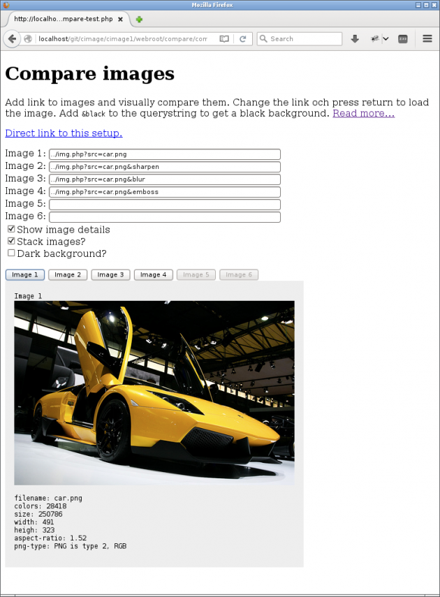

Get going quickly

This is how img.php?source=kodim04.png&area=40,0,50,0&w=630 could look like.
Here are a few quick steps to get going with CImage and to get a basic understanding of how it works.
#Check out the test page
There is a test page with a set of examples. Try it out by pointing your browser to the test file webroot/test/test.php. It will show example images processed in various ways and you can review how they are created.
#Process your first image
Try it yourself by opening up an image in your browser. Start with selecting an image with the mandatory src option.
A square thumbnail.
img.php?src=kodim04.png
The try to resize the image to a thumbnail by adding the following options that define a width, height and crops the image to fit into the imaginary box, defined by the width and height options.
&width=100&height=100&crop-to-fit
This is the basics. You start by selecting an image source and then apply options for resize and processing the image.
#Test directory
The directory webroot/test contains a set of testcases that you can review to learn how to use CImage.
#Compare images
The directory webroot/compare contains a compare tool you can use to visually compare images. Use this tool and overlay the images to find out how the processing options affect the image.
You can try out the compare tool through webroot/compare/compare-test.php.
It can look like this when you stack images over each other to make comparison easy.


The compare tool in action with option checked for stacking images.